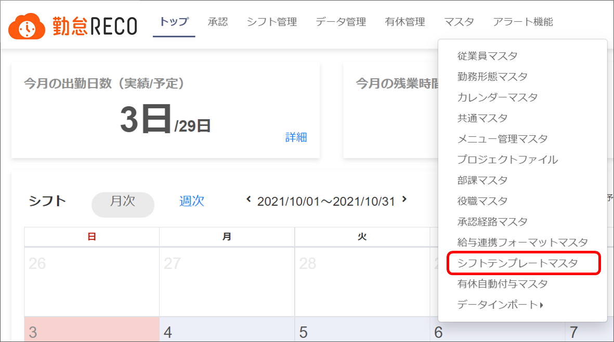
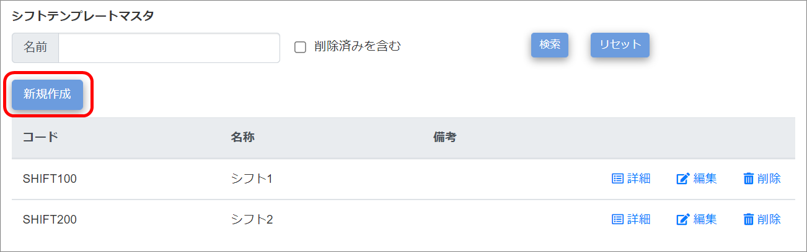
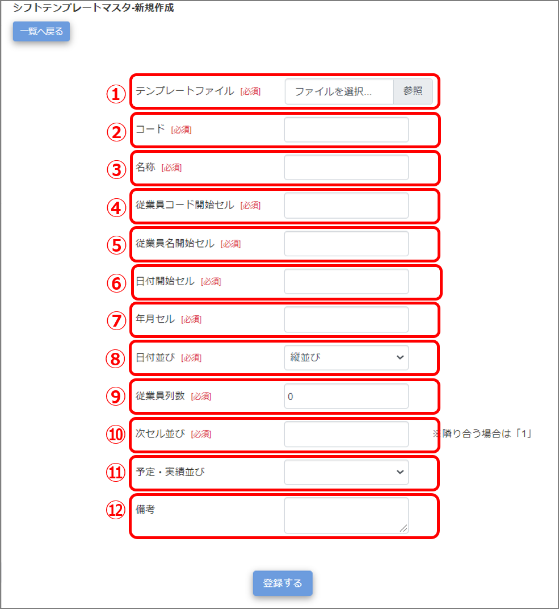
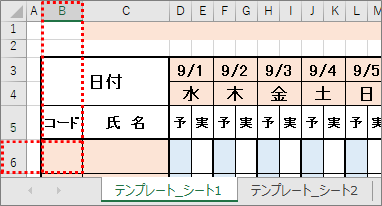
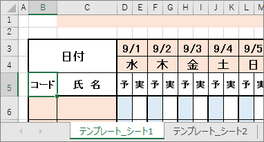
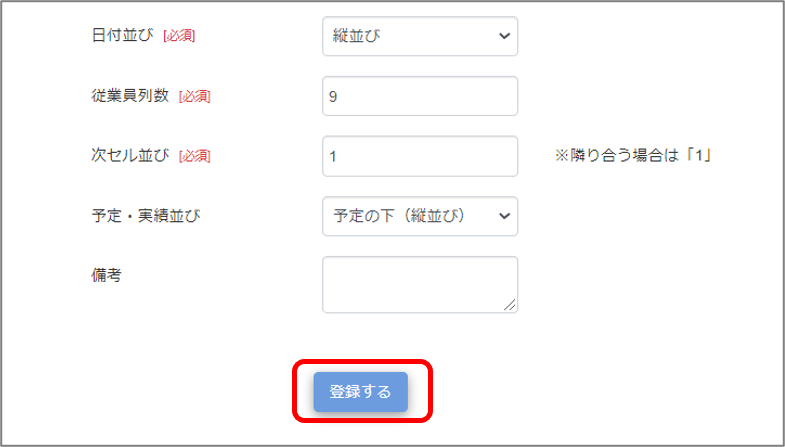
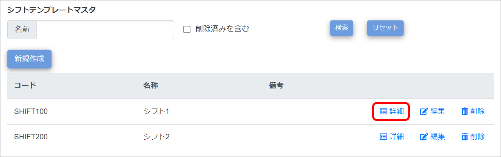
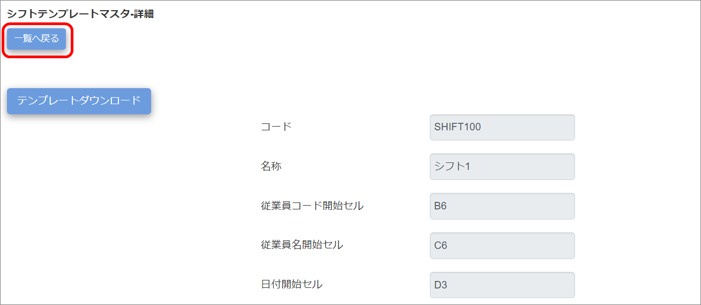
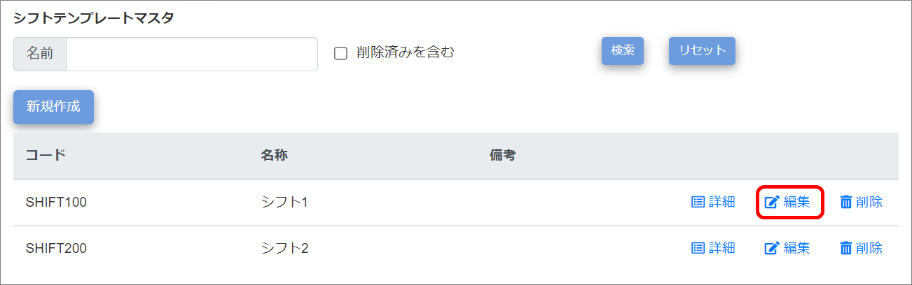
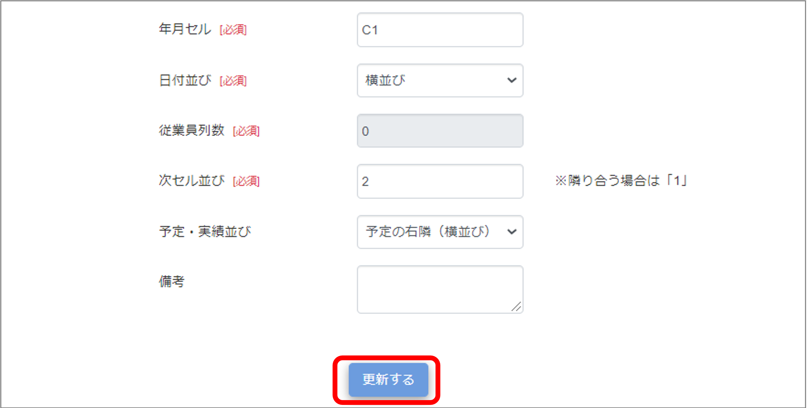

シフトテンプレートの登録
勤怠RECOで使用するシフトテンプレートに自社で使用しているテンプレートを登録します（エクセルファイルのみ）。登録したシフトテンプレートは［シフト取込］でダウンロードできます。
登録は［シフトテンプレートマスタ］画面で実施します。
ご注意 |
シフトテンプレートマスタを操作できるのは、システム管理者アカウントのみです。 |
ヒント |
勤怠RECOのデフォルトシフトテンプレートを使用する場合（［マスタ］＞［共通マスタ］メニューで「デフォルトシートテンプレート」を「使用する」にした場合）、このメニューは表示されません。
|
シフトテンプレートマスタを登録する
-
［マスタ］をクリックし、［シフトテンプレートマスタ］をクリックする

「シフトテンプレートマスタ」画面が表示されます。
-
［新規作成］ボタンをクリックする

「シフトテンプレートマスタ-新規作成」画面が表示されます。
-
各項目を入力する

-
テンプレートファイル
自社のシフトテンプレートファイルを選択します。拡張子xlsxのファイルのみ取り込めます。
ご注意 |
xlsxファイルのシート数は1つにしてください。
また、年月や曜日などのデータが含まれるセルには、他セルからの引用ではなく、固定の値を設定してください。
|
ヒント |
ここで登録したテンプレートはシフトテンプレートマスタの一覧画面の「詳細」からダウンロードできます。
|
-
コード
シフトテンプレートのコードを設定します。設定後の変更はできません。（最大255文字）
マスタ一覧ではコード順でマスタが表示されます。
-
名称
シフトテンプレートの名称を設定します（最大255文字）。
-
従業員コード開始セル
取り込むエクセルファイルでの従業員コード開始位置のセルを入力します（最大255文字）。
ヒント |
セルの指定は、下図のシートであれば「B6」と入力します。対象セルが結合されてる場合は、結合範囲内の左上セルの値を入力します。

|
-
従業員名開始セル
取り込むエクセルファイルでの従業員名開始位置のセルを入力します（最大255文字）。
-
日付開始セル
取り込むエクセルファイルでの日付開始位置のセルを入力します（最大255文字）。
ご注意 |
日付は必ず「yyyy/mm/dd」形式でご入力ください。「mm/dd」形式で入力されると、正常に取り込めない場合があります。
|
-
年月セル
取り込むエクセルファイルでの年月開始位置のセルを入力します（最大255文字）。
-
日付並び
日付の並び順を選択します。
縦並び・・・日付が列に縦に並んでいる。
横並び・・・日付が行に横に並んでいる。
-
従業員列数
従業員が入力されている列の数を入力します（最大8文字）。
日付並びが縦並びの場合のみ、任意の値を指定します。
日付並びが横並びの場合は「0」を指定します。
-
次セル並び
次のデータが入力されているセルまでの並びを入力します（最大8文字）。
※下図のように、テンプレートでシフトが予定・実績と並んでいる場合は「2」を入力してください。実績欄がなく予定のみ並んでいる場合は「1」を入力してください。

-
予定・実績並び
次セル並びを「2」と入力した場合は、シフト予定と実績との並びを入力します。
予定の下（縦並び）・・・予定の下セルに実績データがある。
予定の右隣（横並び）・・・予定の右セルに実績データがある。
ご注意 |
次セル並びを「1」と入力した場合は、この項目は設定しないでください。シフト取込データが正常に反映されなくなくなります。
|
-
備考
最大100文字まで備考を入力できます。
-
［登録する］ボタンをクリックする

画面上部に「登録が完了しました。」とメッセージが表示され、入力したシフトテンプレートマスタ情報がマスタデータに登録されます。
シフトテンプレートマスタを確認・編集・削除する
-
［マスタ］をクリックし、［シフトテンプレートマスタ］をクリックする
「シフトテンプレートマスタ」画面が表示されます。
-
情報を確認したいシフトテンプレートマスタの［詳細］をクリックする
削除したシフトテンプレートを検索する場合は「削除済みを含む」にチェックを付けます。

「シフトテンプレートマスタ-詳細」画面が表示されます。
-
情報を確認し、［一覧へ戻る］ボタンをクリックする

［テンプレートダウンロード］ボタンをクリックすると、対象のシフトテンプレートデータをダウンロードできます。
-
編集したいシフトテンプレートマスタの［編集］をクリックする

ヒント |
［削除］をクリックすると、選択したシフトテンプレートマスタを削除します。
|
「シフトテンプレートマスタ-編集」画面が表示されます。
-
変更したい項目を修正する
-
［更新する］をクリックする

画面上部に「更新が完了しました。」とメッセージが表示され、シフトテンプレートマスタの変更情報がマスタデータに登録されます。
削除を元に戻したい場合は、「削除済みを含む」にチェックを付けて検索し、「シフトテンプレートマスタ-編集」画面で削除済みチェックを外して登録してください。